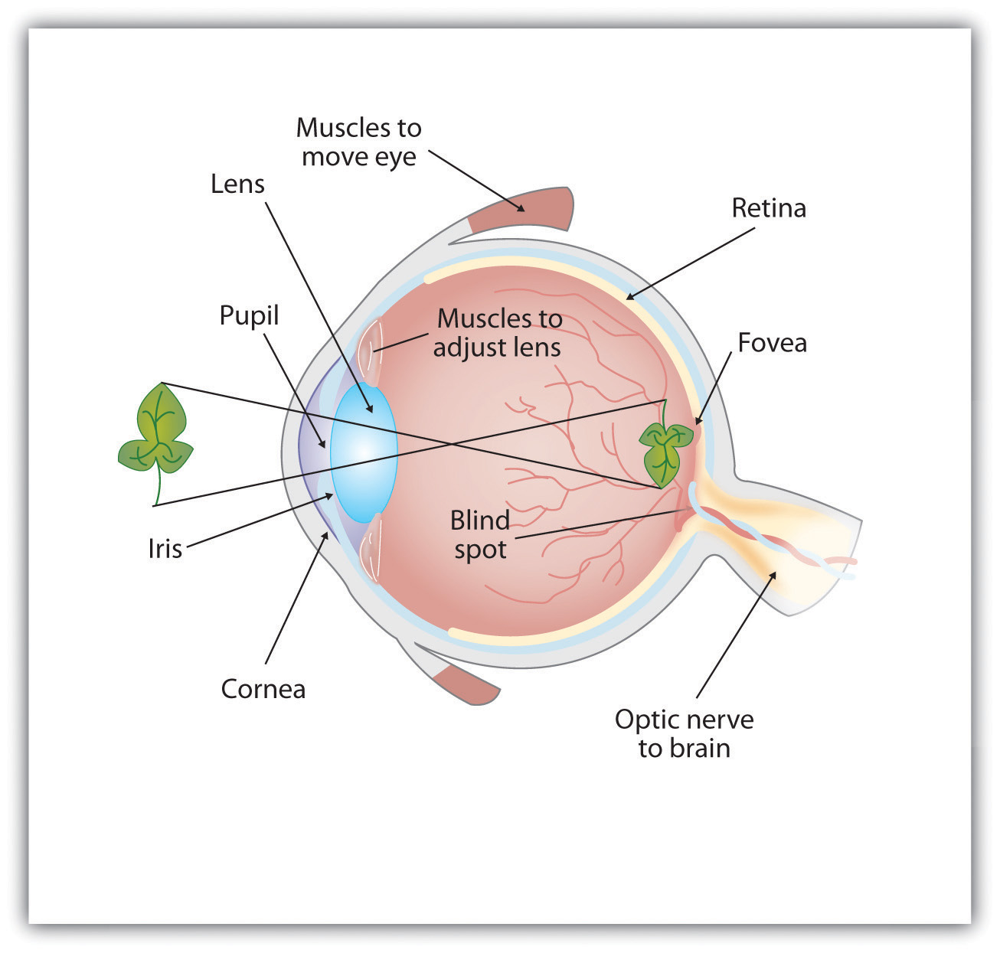
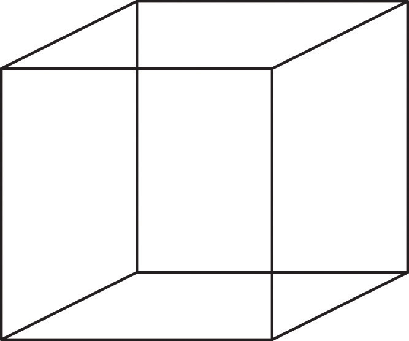
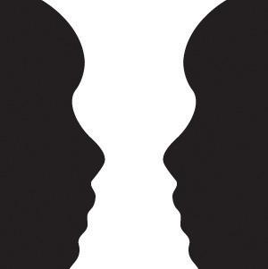
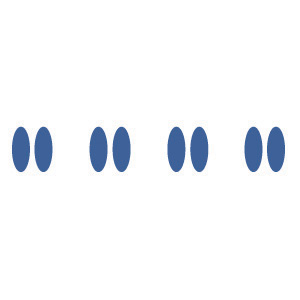
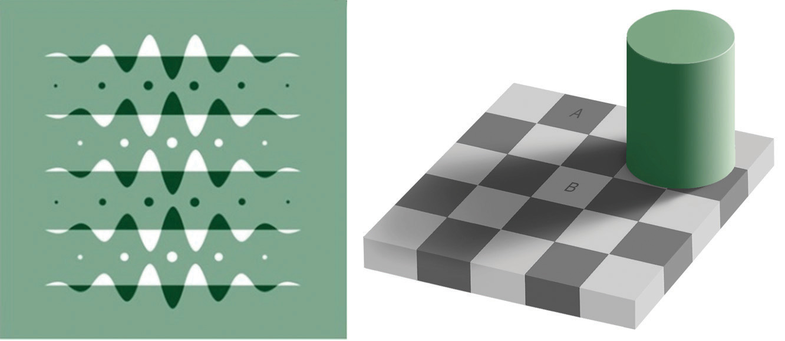
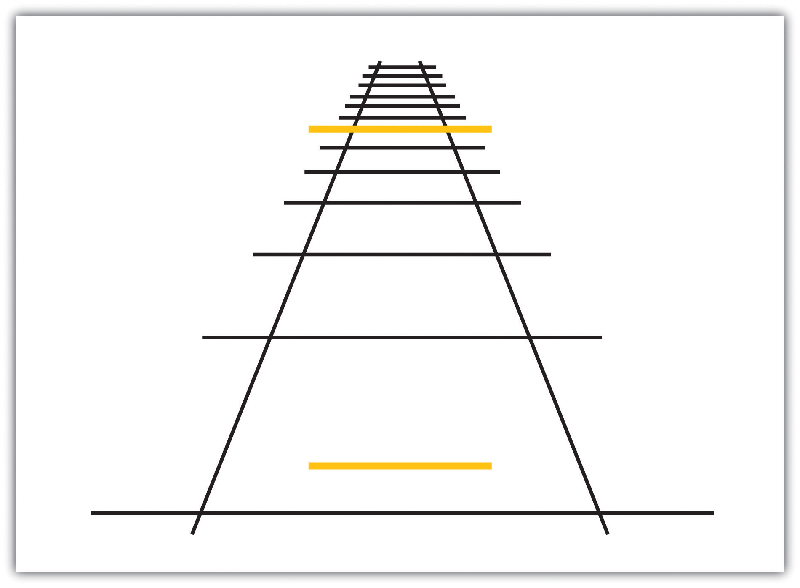
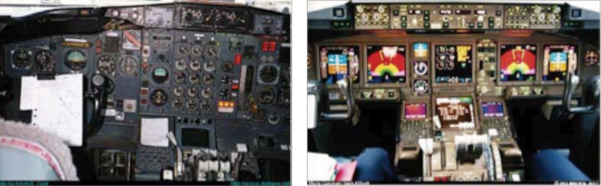

On September 6, 2007, the Asia-Pacific Economic Cooperation (APEC) leaders’ summit was being held in downtown Sydney, Australia. World leaders, including the then-current U.S. president, George W. Bush, were attending the summit. Many roads in the area were closed for security reasons, and police presence was high.
As a prank, eight members of the Australian television satire The Chaser’s War on Everything assembled a false motorcade made up of two black four-wheel-drive vehicles, a black sedan, two motorcycles, body guards, and chauffeurs (see the video below). Group member Chas Licciardello was in one of the cars disguised as Osama bin Laden. The motorcade drove through Sydney’s central business district and entered the security zone of the meeting. The motorcade was waved on by police, through two checkpoints, until the Chaser group decided it had taken the gag far enough and stopped outside the InterContinental Hotel where former President Bush was staying. Licciardello stepped out onto the street and complained, in character as bin Laden, about not being invited to the APEC Summit. Only at this time did the police belatedly check the identity of the group members, finally arresting them.
Chaser APEC Motorcade Stunt
Motorcade Stunt performed by the Chaser pranksters in 2007.
Afterward, the group testified that it had made little effort to disguise its attempt as anything more than a prank. The group’s only realistic attempt to fool police was its Canadian-flag marked vehicles. Other than that, the group used obviously fake credentials, and its security passes were printed with “JOKE,” “Insecurity,” and “It’s pretty obvious this isn’t a real pass,” all clearly visible to any police officer who might have been troubled to look closely as the motorcade passed. The required APEC 2007 Official Vehicle stickers had the name of the group’s show printed on them, and this text: “This dude likes trees and poetry and certain types of carnivorous plants excite him.” In addition, a few of the “bodyguards” were carrying camcorders, and one of the motorcyclists was dressed in jeans, both details that should have alerted police that something was amiss.
The Chaser pranksters later explained the primary reason for the stunt. They wanted to make a statement about the fact that bin Laden, a world leader, had not been invited to an APEC Summit where issues of terror were being discussed. The secondary motive was to test the event’s security. The show’s lawyers approved the stunt, under the assumption that the motorcade would be stopped at the APEC meeting.
The ability to detect and interpret the events that are occurring around us allows us to respond to these stimuli appropriately (Gibson & Pick, 2000).Gibson, E. J., & Pick, A. D. (2000). An ecological approach to perceptual learning and development. New York, NY: Oxford University Press. In most cases the system is successful, but as you can see from the above example, it is not perfect. In this chapter we will discuss the strengths and limitations of these capacities, focusing on both sensationAwareness resulting from the stimulation of a sense organ.—awareness resulting from the stimulation of a sense organ, and perceptionThe organization and interpretation of sensations.—the organization and interpretation of sensations. Sensation and perception work seamlessly together to allow us to experience the world through our eyes, ears, nose, tongue, and skin, but also to combine what we are currently learning from the environment with what we already know about it to make judgments and to choose appropriate behaviors.
The study of sensation and perception is exceedingly important for our everyday lives because the knowledge generated by psychologists is used in so many ways to help so many people. Psychologists work closely with mechanical and electrical engineers, with experts in defense and military contractors, and with clinical, health, and sports psychologists to help them apply this knowledge to their everyday practices. The research is used to help us understand and better prepare people to cope with such diverse events as driving cars, flying planes, creating robots, and managing pain (Fajen & Warren, 2003).Fajen, B. R., & Warren, W. H. (2003). Behavioral dynamics of steering, obstacle avoidance, and route selection. Journal of Experimental Psychology: Human Perception and Performance, 29(2), 343–362.
We will begin the chapter with a focus on the six senses of seeing, hearing, smelling, touching, tasting, and monitoring the body’s positions (proprioception). We will see that sensation is sometimes relatively direct, in the sense that the wide variety of stimuli around us inform and guide our behaviors quickly and accurately, but nevertheless is always the result of at least some interpretation. We do not directly experience stimuli, but rather we experience those stimuli as they are created by our senses. Each sense accomplishes the basic process of transductionThe conversion of stimuli detected by receptor cells to electrical impulses that are then transported to the brain.—the conversion of stimuli detected by receptor cells to electrical impulses that are then transported to the brain—in different, but related, ways.
After we have reviewed the basic processes of sensation, we will turn to the topic of perception, focusing on how the brain’s processing of sensory experience can not only help us make quick and accurate judgments, but also mislead us into making perceptual and judgmental errors, such as those that allowed the Chaser group to breach security at the APEC meeting.
Humans possess powerful sensory capacities that allow us to sense the kaleidoscope of sights, sounds, smells, and tastes that surround us. Our eyes detect light energy and our ears pick up sound waves. Our skin senses touch, pressure, hot, and cold. Our tongues react to the molecules of the foods we eat, and our noses detect scents in the air. The human perceptual system is wired for accuracy, and people are exceedingly good at making use of the wide variety of information available to them (Stoffregen & Bardy, 2001).Stoffregen, T. A., & Bardy, B. G. (2001). On specification and the senses. Behavioral and Brain Sciences, 24(2), 195–261.
In many ways our senses are quite remarkable. The human eye can detect the equivalent of a single candle flame burning 30 miles away and can distinguish among more than 300,000 different colors. The human ear can detect sounds as low as 20 hertz (vibrations per second) and as high as 20,000 hertz, and it can hear the tick of a clock about 20 feet away in a quiet room. We can taste a teaspoon of sugar dissolved in 2 gallons of water, and we are able to smell one drop of perfume diffused in a three-room apartment. We can feel the wing of a bee on our cheek dropped from 1 centimeter above (Galanter, 1962).Galanter, E. (1962). Contemporary Psychophysics. In R. Brown, E. Galanter, E. H. Hess, & G. Mandler (Eds.), New directions in psychology. New York, NY: Holt, Rinehart and Winston.
To get an idea of the range of sounds that the human ear can sense, try testing your hearing here:
Figure 4.2
The dog’s highly sensitive sense of smell comes in useful in searches for missing persons, explosives, foods, and drugs.
Source: Photo courtesy of Harald Dettenborn, http://commons.wikimedia.org/wiki/File:Msc2010_dett_0036.jpg.
Although there is much that we do sense, there is even more that we do not. Dogs, bats, whales, and some rodents all have much better hearing than we do, and many animals have a far richer sense of smell. Birds are able to see the ultraviolet light that we cannot (see Figure 4.3 "Ultraviolet Light and Bird Vision") and can also sense the pull of the earth’s magnetic field. Cats have an extremely sensitive and sophisticated sense of touch, and they are able to navigate in complete darkness using their whiskers. The fact that different organisms have different sensations is part of their evolutionary adaptation. Each species is adapted to sensing the things that are most important to them, while being blissfully unaware of the things that don’t matter.
Figure 4.3 Ultraviolet Light and Bird Vision

Because birds can see ultraviolet light but humans cannot, what looks to us like a plain black bird looks much different to a bird.
Source: Adapted from Fatal Light Awareness Program. (2008). Our research program. Retrieved from http://www.flap.org/research.htm.
PsychophysicsIs the branch of psychology that studies the effects of physical stimuli on sensory perceptions and mental states. is the branch of psychology that studies the effects of physical stimuli on sensory perceptions and mental states. The field of psychophysics was founded by the German psychologist Gustav Fechner (1801–1887), who was the first to study the relationship between the strength of a stimulus and a person’s ability to detect the stimulus.
The measurement techniques developed by Fechner and his colleagues are designed in part to help determine the limits of human sensation. One important criterion is the ability to detect very faint stimuli. The absolute thresholdThe intensity of a stimulus that allows an organism to just barely detect it. of a sensation is defined as the intensity of a stimulus that allows an organism to just barely detect it.
In a typical psychophysics experiment, an individual is presented with a series of trials in which a signal is sometimes presented and sometimes not, or in which two stimuli are presented that are either the same or different. Imagine, for instance, that you were asked to take a hearing test. On each of the trials your task is to indicate either “yes” if you heard a sound or “no” if you did not. The signals are purposefully made to be very faint, making accurate judgments difficult.
The problem for you is that the very faint signals create uncertainty. Because our ears are constantly sending background information to the brain, you will sometimes think that you heard a sound when none was there, and you will sometimes fail to detect a sound that is there. Your task is to determine whether the neural activity that you are experiencing is due to the background noise alone or is a result of a signal within the noise.
The responses that you give on the hearing test can be analyzed using signal detection analysis. Signal detection analysisA technique used to determine the ability of the perceiver to separate true signals from background noise. is a technique used to determine the ability of the perceiver to separate true signals from background noise (Macmillan & Creelman, 2005; Wickens, 2002).Macmillan, N. A., & Creelman, C. D. (2005). Detection theory: A user’s guide (2nd ed). Mahwah, NJ: Lawrence Erlbaum Associates; Wickens, T. D. (2002). Elementary signal detection theory. New York, NY: Oxford University Press. As you can see in Figure 4.4 "Outcomes of a Signal Detection Analysis", each judgment trial creates four possible outcomes: A hit occurs when you, as the listener, correctly say “yes” when there was a sound. A false alarm occurs when you respond “yes” to no signal. In the other two cases you respond “no”—either a miss (saying “no” when there was a signal) or a correct rejection (saying “no” when there was in fact no signal).
Figure 4.4 Outcomes of a Signal Detection Analysis

Our ability to accurately detect stimuli is measured using a signal detection analysis. Two of the possible decisions (hits and correct rejections) are accurate; the other two (misses and false alarms) are errors.
The analysis of the data from a psychophysics experiment creates two measures. One measure, known as sensitivity, refers to the true ability of the individual to detect the presence or absence of signals. People who have better hearing will have higher sensitivity than will those with poorer hearing. The other measure, response bias, refers to a behavioral tendency to respond “yes” to the trials, which is independent of sensitivity.
Imagine for instance that rather than taking a hearing test, you are a soldier on guard duty, and your job is to detect the very faint sound of the breaking of a branch that indicates that an enemy is nearby. You can see that in this case making a false alarm by alerting the other soldiers to the sound might not be as costly as a miss (a failure to report the sound), which could be deadly. Therefore, you might well adopt a very lenient response bias in which whenever you are at all unsure, you send a warning signal. In this case your responses may not be very accurate (your sensitivity may be low because you are making a lot of false alarms) and yet the extreme response bias can save lives.
Another application of signal detection occurs when medical technicians study body images for the presence of cancerous tumors. Again, a miss (in which the technician incorrectly determines that there is no tumor) can be very costly, but false alarms (referring patients who do not have tumors to further testing) also have costs. The ultimate decisions that the technicians make are based on the quality of the signal (clarity of the image), their experience and training (the ability to recognize certain shapes and textures of tumors), and their best guesses about the relative costs of misses versus false alarms.
Although we have focused to this point on the absolute threshold, a second important criterion concerns the ability to assess differences between stimuli. The difference threshold (or just noticeable difference [JND])The change in a stimulus that can just barely be detected by the organism., refers to the change in a stimulus that can just barely be detected by the organism. The German physiologist Ernst Weber (1795–1878) made an important discovery about the JND—namely, that the ability to detect differences depends not so much on the size of the difference but on the size of the difference in relationship to the absolute size of the stimulus. Weber’s lawJust noticeable difference of a stimulus is a constant proportion of the original intensity of the stimulus. maintains that the just noticeable difference of a stimulus is a constant proportion of the original intensity of the stimulus. As an example, if you have a cup of coffee that has only a very little bit of sugar in it (say 1 teaspoon), adding another teaspoon of sugar will make a big difference in taste. But if you added that same teaspoon to a cup of coffee that already had 5 teaspoons of sugar in it, then you probably wouldn’t taste the difference as much (in fact, according to Weber’s law, you would have to add 5 more teaspoons to make the same difference in taste).
One interesting application of Weber’s law is in our everyday shopping behavior. Our tendency to perceive cost differences between products is dependent not only on the amount of money we will spend or save, but also on the amount of money saved relative to the price of the purchase. I would venture to say that if you were about to buy a soda or candy bar in a convenience store and the price of the items ranged from $1 to $3, you would think that the $3 item cost “a lot more” than the $1 item. But now imagine that you were comparing between two music systems, one that cost $397 and one that cost $399. Probably you would think that the cost of the two systems was “about the same,” even though buying the cheaper one would still save you $2.
If you study Figure 4.5 "Absolute Threshold", you will see that the absolute threshold is the point where we become aware of a faint stimulus. After that point, we say that the stimulus is conscious because we can accurately report on its existence (or its nonexistence) better than 50% of the time. But can subliminal stimuliStimuli that are below the absolute threshold and of which we are not conscious. (events that occur below the absolute threshold and of which we are not conscious) have an influence on our behavior?
Figure 4.5 Absolute Threshold
As the intensity of a stimulus increases, we are more likely to perceive it. Stimuli below the absolute threshold can still have at least some influence on us, even though we cannot consciously detect them.
A variety of research programs have found that subliminal stimuli can influence our judgments and behavior, at least in the short term (Dijksterhuis, 2010).Dijksterhuis, A. (2010). Automaticity and the unconscious. In S. T. Fiske, D. T. Gilbert, & G. Lindzey (Eds.), Handbook of social psychology (5th ed., Vol. 1, pp. 228–267). Hoboken, NJ: John Wiley & Sons. But whether the presentation of subliminal stimuli can influence the products that we buy has been a more controversial topic in psychology. In one relevant experiment, Karremans, Stroebe, and Claus (2006)Karremans, J. C., Stroebe, W., & Claus, J. (2006). Beyond Vicary’s fantasies: The impact of subliminal priming and brand choice. Journal of Experimental Social Psychology, 42(6), 792–798. had Dutch college students view a series of computer trials in which a string of letters such as BBBBBBBBB or BBBbBBBBB were presented on the screen. To be sure they paid attention to the display, the students were asked to note whether the strings contained a small b. However, immediately before each of the letter strings, the researchers presented either the name of a drink that is popular in Holland (Lipton Ice) or a control string containing the same letters as Lipton Ice (NpeicTol). These words were presented so quickly (for only about one fiftieth of a second) that the participants could not see them.
Then the students were asked to indicate their intention to drink Lipton Ice by answering questions such as “If you would sit on a terrace now, how likely is it that you would order Lipton Ice,” and also to indicate how thirsty they were at the time. The researchers found that the students who had been exposed to the “Lipton Ice” words (and particularly those who indicated that they were already thirsty) were significantly more likely to say that they would drink Lipton Ice than were those who had been exposed to the control words.
If it were effective, procedures such as this (we can call the technique “subliminal advertising” because it advertises a product outside awareness) would have some major advantages for advertisers, because it would allow them to promote their products without directly interrupting the consumers’ activity and without the consumers’ knowing they are being persuaded. People cannot counterargue with, or attempt to avoid being influenced by, messages received outside awareness. Due to fears that people may be influenced without their knowing, subliminal advertising has been legally banned in many countries, including Australia, Great Britain, and the United States.
Although it has been proven to work in some research, subliminal advertising’s effectiveness is still uncertain. Charles Trappey (1996)Trappey, C. (1996). A meta-analysis of consumer choice and subliminal advertising. Psychology and Marketing, 13, 517–530. conducted a meta-analysis in which he combined 23 leading research studies that had tested the influence of subliminal advertising on consumer choice. The results of his meta-analysis showed that subliminal advertising had a negligible effect on consumer choice. And Saegert (1987, p. 107)Saegert, J. (1987). Why marketing should quit giving subliminal advertising the benefit of the doubt. Psychology and Marketing, 4(2), 107–120. concluded that “marketing should quit giving subliminal advertising the benefit of the doubt,” arguing that the influences of subliminal stimuli are usually so weak that they are normally overshadowed by the person’s own decision making about the behavior.
Taken together then, the evidence for the effectiveness of subliminal advertising is weak, and its effects may be limited to only some people and in only some conditions. You probably don’t have to worry too much about being subliminally persuaded in your everyday life, even if subliminal ads are allowed in your country. But even if subliminal advertising is not all that effective itself, there are plenty of other indirect advertising techniques that are used and that do work. For instance, many ads for automobiles and alcoholic beverages are subtly sexualized, which encourages the consumer to indirectly (even if not subliminally) associate these products with sexuality. And there is the ever more frequent “product placement” techniques, where images of brands (cars, sodas, electronics, and so forth) are placed on websites and in popular television shows and movies. Harris, Bargh, & Brownell (2009)Harris, J. L., Bargh, J. A., & Brownell, K. D. (2009). Priming effects of television food advertising on eating behavior. Health Psychology, 28(4), 404–413. found that being exposed to food advertising on television significantly increased child and adult snacking behaviors, again suggesting that the effects of perceived images, even if presented above the absolute threshold, may nevertheless be very subtle.
Another example of processing that occurs outside our awareness is seen when certain areas of the visual cortex are damaged, causing blindsightA condition brought on by damage to the visual cortex, in which people are unable to consciously report on visual stimuli but nevertheless are able to accurately answer questions about what they are seeing., a condition in which people are unable to consciously report on visual stimuli but nevertheless are able to accurately answer questions about what they are seeing. When people with blindsight are asked directly what stimuli look like, or to determine whether these stimuli are present at all, they cannot do so at better than chance levels. They report that they cannot see anything. However, when they are asked more indirect questions, they are able to give correct answers. For example, people with blindsight are able to correctly determine an object’s location and direction of movement, as well as identify simple geometrical forms and patterns (Weiskrantz, 1997).Weiskrantz, L. (1997). Consciousness lost and found: A neuropsychological exploration. New York, NY: Oxford University Press. It seems that although conscious reports of the visual experiences are not possible, there is still a parallel and implicit process at work, enabling people to perceive certain aspects of the stimuli.
Whereas other animals rely primarily on hearing, smell, or touch to understand the world around them, human beings rely in large part on vision. A large part of our cerebral cortex is devoted to seeing, and we have substantial visual skills. Seeing begins when light falls on the eyes, initiating the process of transduction. Once this visual information reaches the visual cortex, it is processed by a variety of neurons that detect colors, shapes, and motion, and that create meaningful perceptions out of the incoming stimuli.
The air around us is filled with a sea of electromagnetic energy; pulses of energy waves that can carry information from place to place. As you can see in Figure 4.6 "The Electromagnetic Spectrum", electromagnetic waves vary in their wavelengthThe distance between one wave peak and the next wave peak.—the distance between one wave peak and the next wave peak, with the shortest gamma waves being only a fraction of a millimeter in length and the longest radio waves being hundreds of kilometers long. Humans are blind to almost all of this energy—our eyes detect only the range from about 400 to 700 billionths of a meter, the part of the electromagnetic spectrum known as the visible spectrum.
Figure 4.6 The Electromagnetic Spectrum

Only a small fraction of the electromagnetic energy that surrounds us (the visible spectrum) is detectable by the human eye.
As you can see in Figure 4.7 "Anatomy of the Human Eye", light enters the eye through the corneaA clear covering that protects the eye and begins to focus the incoming light., a clear covering that protects the eye and begins to focus the incoming light. The light then passes through the pupilThe small opening in the center of the eye that allows light to enter., a small opening in the center of the eye. The pupil is surrounded by the irisThe colored part of the eye that controls the size of the pupil by constricting or dilating in response to light intensity., the colored part of the eye that controls the size of the pupil by constricting or dilating in response to light intensity. When we enter a dark movie theater on a sunny day, for instance, muscles in the iris open the pupil and allow more light to enter. Complete adaptation to the dark may take up to 20 minutes.
Behind the pupil is the lensA structure that focuses the incoming light on the retina., a structure that focuses the incoming light on the retinaThe layer of tissue at the back of the eye that contains photoreceptor cells., the layer of tissue at the back of the eye that contains photoreceptor cells. As our eyes move from near objects to distant objects, a process known as visual accommodation occurs. Visual accommodationThe process of changing the curvature of the lens to keep the light entering the eye focused on the retina. is the process of changing the curvature of the lens to keep the light entering the eye focused on the retina. Rays from the top of the image strike the bottom of the retina and vice versa, and rays from the left side of the image strike the right part of the retina and vice versa, causing the image on the retina to be upside down and backward. Furthermore, the image projected on the retina is flat, and yet our final perception of the image will be three dimensional.
Figure 4.7 Anatomy of the Human Eye
Light enters the eye through the transparent cornea, passing through the pupil at the center of the iris. The lens adjusts to focus the light on the retina, where it appears upside down and backward. Receptor cells on the retina send information via the optic nerve to the visual cortex.
Accommodation is not always perfect, and in some cases the light that is hitting the retina is a bit out of focus. As you can see in Figure 4.8 "Normal, Nearsighted, and Farsighted Eyes", if the focus is in front of the retina, we say that the person is nearsighted, and when the focus is behind the retina we say that the person is farsighted. Eyeglasses and contact lenses correct this problem by adding another lens in front of the eye, and laser eye surgery corrects the problem by reshaping the eye’s own lens.
Figure 4.8 Normal, Nearsighted, and Farsighted Eyes

For people with normal vision (left), the lens properly focuses incoming light on the retina. For people who are nearsighted (center), images from far objects focus too far in front of the retina, whereas for people who are farsighted (right), images from near objects focus too far behind the retina. Eyeglasses solve the problem by adding a secondary, corrective, lens.
The retina contains layers of neurons specialized to respond to light (see Figure 4.9 "The Retina With Its Specialized Cells"). As light falls on the retina, it first activates receptor cells known as rods and cones. The activation of these cells then spreads to the bipolar cells and then to the ganglion cells, which gather together and converge, like the strands of a rope, forming the optic nerve. The optic nerveA collection of millions of ganglion neurons that sends vast amounts of visual information, via the thalamus, to the brain. is a collection of millions of ganglion neurons that sends vast amounts of visual information, via the thalamus, to the brain. Because the retina and the optic nerve are active processors and analyzers of visual information, it is not inappropriate to think of these structures as an extension of the brain itself.
Figure 4.9 The Retina With Its Specialized Cells

When light falls on the retina, it creates a photochemical reaction in the rods and cones at the back of the retina. The reactions then continue to the bipolar cells, the ganglion cells, and eventually to the optic nerve.
RodsVisual neurons that specialize in detecting black, white, and gray colors. are visual neurons that specialize in detecting black, white, and gray colors. There are about 120 million rods in each eye. The rods do not provide a lot of detail about the images we see, but because they are highly sensitive to shorter-waved (darker) and weak light, they help us see in dim light, for instance, at night. Because the rods are located primarily around the edges of the retina, they are particularly active in peripheral vision (when you need to see something at night, try looking away from what you want to see). ConesVisual neurons that are specialized in detecting fine detail and colors. are visual neurons that are specialized in detecting fine detail and colors. The 5 million or so cones in each eye enable us to see in color, but they operate best in bright light. The cones are located primarily in and around the foveaThe central point of the retina., which is the central point of the retina.
To demonstrate the difference between rods and cones in attention to detail, choose a word in this text and focus on it. Do you notice that the words a few inches to the side seem more blurred? This is because the word you are focusing on strikes the detail-oriented cones, while the words surrounding it strike the less-detail-oriented rods, which are located on the periphery.
Figure 4.10 Mona Lisa’s Smile

Margaret Livingstone (2002)Livingstone M. S. (2000). Is it warm? Is it real? Or just low spatial frequency? Science, 290, 1299. found an interesting effect that demonstrates the different processing capacities of the eye’s rods and cones—namely, that the Mona Lisa’s smile, which is widely referred to as “elusive,” is perceived differently depending on how one looks at the painting. Because Leonardo da Vinci painted the smile in low-detail brush strokes, these details are better perceived by our peripheral vision (the rods) than by the cones. Livingstone found that people rated the Mona Lisa as more cheerful when they were instructed to focus on her eyes than they did when they were asked to look directly at her mouth. As Livingstone put it, “She smiles until you look at her mouth, and then it fades, like a dim star that disappears when you look directly at it.”
Source: Photo courtesy of the Louvre Museum, http://commons.wikimedia.org/wiki/File:Mona_Lisa_detail_face.jpg.
As you can see in Figure 4.11 "Pathway of Visual Images Through the Thalamus and Into the Visual Cortex", the sensory information received by the retina is relayed through the thalamus to corresponding areas in the visual cortex, which is located in the occipital lobe at the back of the brain. Although the principle of contralateral control might lead you to expect that the left eye would send information to the right brain hemisphere and vice versa, nature is smarter than that. In fact, the left and right eyes each send information to both the left and the right hemisphere, and the visual cortex processes each of the cues separately and in parallel. This is an adaptational advantage to an organism that loses sight in one eye, because even if only one eye is functional, both hemispheres will still receive input from it.
Figure 4.11 Pathway of Visual Images Through the Thalamus and Into the Visual Cortex

The left and right eyes each send information to both the left and the right brain hemisphere.
The visual cortex is made up of specialized neurons that turn the sensations they receive from the optic nerve into meaningful images. Because there are no photoreceptor cells at the place where the optic nerve leaves the retina, a hole or blind spot in our vision is created (see Figure 4.12 "Blind Spot Demonstration"). When both of our eyes are open, we don’t experience a problem because our eyes are constantly moving, and one eye makes up for what the other eye misses. But the visual system is also designed to deal with this problem if only one eye is open—the visual cortex simply fills in the small hole in our vision with similar patterns from the surrounding areas, and we never notice the difference. The ability of the visual system to cope with the blind spot is another example of how sensation and perception work together to create meaningful experience.
Figure 4.12 Blind Spot Demonstration

You can get an idea of the extent of your blind spot (the place where the optic nerve leaves the retina) by trying this demonstration. Close your left eye and stare with your right eye at the cross in the diagram. You should be able to see the elephant image to the right (don’t look at it, just notice that it is there). If you can’t see the elephant, move closer or farther away until you can. Now slowly move so that you are closer to the image while you keep looking at the cross. At one distance (probably a foot or so), the elephant will completely disappear from view because its image has fallen on the blind spot.
Perception is created in part through the simultaneous action of thousands of feature detector neuronsSpecialized neurons, located in the visual cortex, that respond to the strength, angles, shapes, edges, and movements of a visual stimulus.—specialized neurons, located in the visual cortex, that respond to the strength, angles, shapes, edges, and movements of a visual stimulus (Kelsey, 1997; Livingstone & Hubel, 1988).Kelsey, C.A. (1997). Detection of visual information. In W. R. Hendee & P. N. T. Wells (Eds.), The perception of visual information (2nd ed.). New York, NY: Springer Verlag; Livingstone, M., & Hubel, D. (1998). Segregation of form, color, movement, and depth: Anatomy, physiology, and perception. Science, 240, 740–749. The feature detectors work in parallel, each performing a specialized function. When faced with a red square, for instance, the parallel line feature detectors, the horizontal line feature detectors, and the red color feature detectors all become activated. This activation is then passed on to other parts of the visual cortex where other neurons compare the information supplied by the feature detectors with images stored in memory. Suddenly, in a flash of recognition, the many neurons fire together, creating the single image of the red square that we experience (Rodriguez et al., 1999).Rodriguez, E., George, N., Lachaux, J.-P., Martinerie, J., Renault, B., & Varela, F. J. (1999). Perception’s shadow: Long-distance synchronization of human brain activity. Nature, 397(6718), 430–433.
Figure 4.13 The Necker Cube
The Necker cube is an example of how the visual system creates perceptions out of sensations. We do not see a series of lines, but rather a cube. Which cube we see varies depending on the momentary outcome of perceptual processes in the visual cortex.
Some feature detectors are tuned to selectively respond to particularly important objects, for instance, faces, smiles, and other parts of the body (Downing, Jiang, Shuman, & Kanwisher, 2001; Haxby et al., 2001).Downing, P. E., Jiang, Y., Shuman, M., & Kanwisher, N. (2001). A cortical area selective for visual processing of the human body. Science, 293(5539), 2470–2473; Haxby, J. V., Gobbini, M. I., Furey, M. L., Ishai, A., Schouten, J. L., & Pietrini, P. (2001). Distributed and overlapping representations of faces and objects in ventral temporal cortex. Science, 293(5539), 2425–2430. When researchers disrupted face recognition areas of the cortex using the magnetic pulses of transcranial magnetic stimulation (TMS), people were temporarily unable to recognize faces, and yet they were still able to recognize houses (McKone, Kanwisher, & Duchaine, 2007; Pitcher, Walsh, Yovel, & Duchaine, 2007).McKone, E., Kanwisher, N., & Duchaine, B. C. (2007). Can generic expertise explain special processing for faces? Trends in Cognitive Sciences, 11, 8–15; Pitcher, D., Walsh, V., Yovel, G., & Duchaine, B. (2007). TMS evidence for the involvement of the right occipital face area in early face processing. Current Biology, 17, 1568–1573.
It has been estimated that the human visual system can detect and discriminate among 7 million color variations (Geldard, 1972),Geldard, F. A. (1972). The human senses (2nd ed.). New York, NY: John Wiley & Sons. but these variations are all created by the combinations of the three primary colors: red, green, and blue. The shade of a color, known as hueColor conveyed by the wavelength of the light that enters the eye., is conveyed by the wavelength of the light that enters the eye (we see shorter wavelengths as more blue and longer wavelengths as more red), and we detect brightness from the intensity or height of the wave (bigger or more intense waves are perceived as brighter).
Figure 4.14 Low- and High-Frequency Sine Waves and Low- and High-Intensity Sine Waves and Their Corresponding Colors

Light waves with shorter frequencies are perceived as more blue than red; light waves with higher intensity are seen as brighter.
In his important research on color vision, Hermann von Helmholtz (1821–1894) theorized that color is perceived because the cones in the retina come in three types. One type of cone reacts primarily to blue light (short wavelengths), another reacts primarily to green light (medium wavelengths), and a third reacts primarily to red light (long wavelengths). The visual cortex then detects and compares the strength of the signals from each of the three types of cones, creating the experience of color. According to this Young-Helmholtz trichromatic color theoryThe theory of color perception that proposes that what color we see depends on the mix of the signals from the three types of cones., what color we see depends on the mix of the signals from the three types of cones. If the brain is receiving primarily red and blue signals, for instance, it will perceive purple; if it is receiving primarily red and green signals it will perceive yellow; and if it is receiving messages from all three types of cones it will perceive white.
The different functions of the three types of cones are apparent in people who experience color blindnessThe inability to detect either green and/or red colors.—the inability to detect either green and/or red colors. About 1 in 50 people, mostly men, lack functioning in the red- or green-sensitive cones, leaving them only able to experience either one or two colors (Figure 4.15).
Figure 4.15

People with normal color vision can see the number 42 in the first image and the number 12 in the second (they are vague but apparent). However, people who are color blind cannot see the numbers at all.
The trichromatic color theory cannot explain all of human vision, however. For one, although the color purple does appear to us as a mixing of red and blue, yellow does not appear to be a mix of red and green. And people with color blindness, who cannot see either green or red, nevertheless can still see yellow. An alternative approach to the Young-Helmholtz theory, known as the opponent-process color theoryThe theory of color perception that proposes that we analyze sensory information in three sets of “opponent colors”: red-green, yellow-blue, and white-black., proposes that we analyze sensory information not in terms of three colors but rather in three sets of “opponent colors”: red-green, yellow-blue, and white-black. Evidence for the opponent-process theory comes from the fact that some neurons in the retina and in the visual cortex are excited by one color (e.g., red) but inhibited by another color (e.g., green).
One example of opponent processing occurs in the experience of an afterimage. If you stare at the flag on the left side of Figure 4.16 "U.S. Flag" for about 30 seconds (the longer you look, the better the effect), and then move your eyes to the blank area to the right of it, you will see the afterimage. When we stare at the green stripes, our green receptors habituate and begin to process less strongly, whereas the red receptors remain at full strength. When we switch our gaze, we see primarily the red part of the opponent process. Similar processes create blue after yellow and white after black.
Figure 4.16 U.S. Flag
The presence of an afterimage is best explained by the opponent-process theory of color perception. Stare at the flag for a few seconds, and then move your gaze to the blank space next to it. Do you see the afterimage?
Source: Photo courtesy of Mike Swanson, http://en.wikipedia.org/wiki/File:US_flag(inverted).svg.
The tricolor and the opponent-process mechanisms work together to produce color vision. When light rays enter the eye, the red, blue, and green cones on the retina respond in different degrees, and send different strength signals of red, blue, and green through the optic nerve. The color signals are then processed both by the ganglion cells and by the neurons in the visual cortex (Gegenfurtner & Kiper, 2003).Gegenfurtner, K. R., & Kiper, D. C. (2003). Color vision. Annual Review of Neuroscience, 26, 181–206.
One of the important processes required in vision is the perception of form. German psychologists in the 1930s and 1940s, including Max Wertheimer (1880–1943), Kurt Koffka (1886–1941), and Wolfgang Köhler (1887–1967), argued that we create forms out of their component sensations based on the idea of the gestaltA meaningful organized whole., a meaningfully organized whole. The idea of the gestalt is that the “whole is more than the sum of its parts.” Some examples of how gestalt principles lead us to see more than what is actually there are summarized in Table 4.1 "Summary of Gestalt Principles of Form Perception".
Table 4.1 Summary of Gestalt Principles of Form Perception
| Principle | Description | Example | Image |
|---|---|---|---|
| Figure and ground | We structure input such that we always see a figure (image) against a ground (background). | At right, you may see a vase or you may see two faces, but in either case, you will organize the image as a figure against a ground. | Figure 4.1  |
| Similarity | Stimuli that are similar to each other tend to be grouped together. | You are more likely to see three similar columns among the XYX characters at right than you are to see four rows. | Figure 4.1 
|
| Proximity | We tend to group nearby figures together. | Do you see four or eight images at right? Principles of proximity suggest that you might see only four. | Figure 4.1  |
| Continuity | We tend to perceive stimuli in smooth, continuous ways rather than in more discontinuous ways. | At right, most people see a line of dots that moves from the lower left to the upper right, rather than a line that moves from the left and then suddenly turns down. The principle of continuity leads us to see most lines as following the smoothest possible path. | Figure 4.1 
|
| Closure | We tend to fill in gaps in an incomplete image to create a complete, whole object. | Closure leads us to see a single spherical object at right rather than a set of unrelated cones. | Figure 4.1 |
Depth perceptionThe ability to perceive three-dimensional space and to accurately judge distance. is the ability to perceive three-dimensional space and to accurately judge distance. Without depth perception, we would be unable to drive a car, thread a needle, or simply navigate our way around the supermarket (Howard & Rogers, 2001).Howard, I. P., & Rogers, B. J. (2001). Seeing in depth: Basic mechanisms (Vol. 1). Toronto, Ontario, Canada: Porteous. Research has found that depth perception is in part based on innate capacities and in part learned through experience (Witherington, 2005).Witherington, D. C. (2005). The development of prospective grasping control between 5 and 7 months: A longitudinal study. Infancy, 7(2), 143–161.
Psychologists Eleanor Gibson and Richard Walk (1960)Gibson, E. J., & Walk, R. D. (1960). The “visual cliff.” Scientific American, 202(4), 64–71. tested the ability to perceive depth in 6- to 14-month-old infants by placing them on a visual cliffA mechanism that gives the perception of a dangerous drop-off, in which infants can be safely tested for their perception of depth., a mechanism that gives the perception of a dangerous drop-off, in which infants can be safely tested for their perception of depth (Figure 4.22 "Visual Cliff"). The infants were placed on one side of the “cliff,” while their mothers called to them from the other side. Gibson and Walk found that most infants either crawled away from the cliff or remained on the board and cried because they wanted to go to their mothers, but the infants perceived a chasm that they instinctively could not cross. Further research has found that even very young children who cannot yet crawl are fearful of heights (Campos, Langer, & Krowitz, 1970).Campos, J. J., Langer, A., & Krowitz, A. (1970). Cardiac responses on the visual cliff in prelocomotor human infants. Science, 170(3954), 196–197. On the other hand, studies have also found that infants improve their hand-eye coordination as they learn to better grasp objects and as they gain more experience in crawling, indicating that depth perception is also learned (Adolph, 2000).Adolph, K. E. (2000). Specificity of learning: Why infants fall over a veritable cliff. Psychological Science, 11(4), 290–295.
Figure 4.22 Visual Cliff
Babies appear to have the innate ability to perceive depth, as seen by this baby’s reluctance to cross the “visual cliff.”
Depth perception is the result of our use of depth cuesMessages from our bodies and the external environment that supply us with information about space and distance., messages from our bodies and the external environment that supply us with information about space and distance. Binocular depth cuesDepth cues that are created by retinal disparity—that is, the space between our eyes, and thus require the coordination of both eyes. are depth cues that are created by retinal image disparity—that is, the space between our eyes, and thus which require the coordination of both eyes. One outcome of retinal disparity is that the images projected on each eye are slightly different from each other. The visual cortex automatically merges the two images into one, enabling us to perceive depth. Three-dimensional movies make use of retinal disparity by using 3-D glasses that the viewer wears to create a different image on each eye. The perceptual system quickly, easily, and unconsciously turns the disparity into 3-D.
An important binocular depth cue is convergenceThe inward turning of our eyes that is required to focus on objects that are less than about 50 feet away from us., the inward turning of our eyes that is required to focus on objects that are less than about 50 feet away from us. The visual cortex uses the size of the convergence angle between the eyes to judge the object’s distance. You will be able to feel your eyes converging if you slowly bring a finger closer to your nose while continuing to focus on it. When you close one eye, you no longer feel the tension—convergence is a binocular depth cue that requires both eyes to work.
The visual system also uses accommodation to help determine depth. As the lens changes its curvature to focus on distant or close objects, information relayed from the muscles attached to the lens helps us determine an object’s distance. Accommodation is only effective at short viewing distances, however, so while it comes in handy when threading a needle or tying shoelaces, it is far less effective when driving or playing sports.
Although the best cues to depth occur when both eyes work together, we are able to see depth even with one eye closed. Monocular depth cuesDepth cues that help us perceive depth using only one eye. are depth cues that help us perceive depth using only one eye (Sekuler & Blake, 2006).Sekuler, R., & Blake, R., (2006). Perception (5th ed.). New York, NY: McGraw-Hill. Some of the most important are summarized in Table 4.2 "Monocular Depth Cues That Help Us Judge Depth at a Distance".
Table 4.2 Monocular Depth Cues That Help Us Judge Depth at a Distance
| Name | Description | Example | Image |
|---|---|---|---|
| Position | We tend to see objects higher up in our field of vision as farther away. | The fence posts at right appear farther away not only because they become smaller but also because they appear higher up in the picture. | Figure 4.2 |
| Relative size | Assuming that the objects in a scene are the same size, smaller objects are perceived as farther away. | At right, the cars in the distance appear smaller than those nearer to us. | Figure 4.2 |
| Linear perspective | Parallel lines appear to converge at a distance. | We know that the tracks at right are parallel. When they appear closer together, we determine they are farther away. | Figure 4.2 
|
| Light and shadow | The eye receives more reflected light from objects that are closer to us. Normally, light comes from above, so darker images are in shadow. | We see the images at right as extending and indented according to their shadowing. If we invert the picture, the images will reverse. | Figure 4.2 
|
| Interposition | When one object overlaps another object, we view it as closer. | At right, because the blue star covers the pink bar, it is seen as closer than the yellow moon. | Figure 4.2 |
| Aerial perspective | Objects that appear hazy, or that are covered with smog or dust, appear farther away. | The artist who painted the picture on the right used aerial perspective to make the clouds more hazy and thus appear farther away. | Figure 4.2 |
Photo sources: TBD
Many animals, including human beings, have very sophisticated perceptual skills that allow them to coordinate their own motion with the motion of moving objects in order to create a collision with that object. Bats and birds use this mechanism to catch up with prey, dogs use it to catch a Frisbee, and humans use it to catch a moving football. The brain detects motion partly from the changing size of an image on the retina (objects that look bigger are usually closer to us) and in part from the relative brightness of objects.
We also experience motion when objects near each other change their appearance. The beta effectThe perception of motion that occurs when different images are presented next to each other in succession. refers to the perception of motion that occurs when different images are presented next to each other in succession (see Note 4.43 "Beta Effect and Phi Phenomenon"). The visual cortex fills in the missing part of the motion and we see the object moving. The beta effect is used in movies to create the experience of motion. A related effect is the phi phenomenonThe perception of motion caused by the appearance and disappearance of objects that are near each other., in which we perceive a sensation of motion caused by the appearance and disappearance of objects that are near each other. The phi phenomenon looks like a moving zone or cloud of background color surrounding the flashing objects. The beta effect and the phi phenomenon are other examples of the importance of the gestalt—our tendency to “see more than the sum of the parts.”
In the beta effect, our eyes detect motion from a series of still images, each with the object in a different place. This is the fundamental mechanism of motion pictures (movies). In the phi phenomenon, the perception of motion is based on the momentary hiding of an image.
Phi phenomenon: http://upload.wikimedia.org/wikipedia/commons/6/6e/Lilac-Chaser.gif
Beta effect: http://upload.wikimedia.org/wikipedia/commons/0/09/Phi_phenomenom_no_watermark.gif
Like vision and all the other senses, hearing begins with transduction. Sound waves that are collected by our ears are converted into neural impulses, which are sent to the brain where they are integrated with past experience and interpreted as the sounds we experience. The human ear is sensitive to a wide range of sounds, ranging from the faint tick of a clock in a nearby room to the roar of a rock band at a nightclub, and we have the ability to detect very small variations in sound. But the ear is particularly sensitive to sounds in the same frequency as the human voice. A mother can pick out her child’s voice from a host of others, and when we pick up the phone we quickly recognize a familiar voice. In a fraction of a second, our auditory system receives the sound waves, transmits them to the auditory cortex, compares them to stored knowledge of other voices, and identifies the identity of the caller.
Just as the eye detects light waves, the ear detects sound waves. Vibrating objects (such as the human vocal chords or guitar strings) cause air molecules to bump into each other and produce sound waves, which travel from their source as peaks and valleys much like the ripples that expand outward when a stone is tossed into a pond. Unlike light waves, which can travel in a vacuum, sound waves are carried within mediums such as air, water, or metal, and it is the changes in pressure associated with these mediums that the ear detects.
As with light waves, we detect both the wavelength and the amplitude of sound waves. The wavelength of the sound wave (known as frequencyThe wavelength of a sound wave.) is measured in terms of the number of waves that arrive per second and determines our perception of pitchThe perceived frequency of a sound., the perceived frequency of a sound. Longer sound waves have lower frequency and produce a lower pitch, whereas shorter waves have higher frequency and a higher pitch.
The amplitudeThe height of a sound wave., or height of the sound wave, determines how much energy it contains and is perceived as loudnessThe degree of sound volume. (the degree of sound volume). Larger waves are perceived as louder. Loudness is measured using the unit of relative loudness known as the decibelThe unit of relative loudness.. Zero decibels represent the absolute threshold for human hearing, below which we cannot hear a sound. Each increase in 10 decibels represents a tenfold increase in the loudness of the sound (see Figure 4.29 "Sounds in Everyday Life"). The sound of a typical conversation (about 60 decibels) is 1,000 times louder than the sound of a faint whisper (30 decibels), whereas the sound of a jackhammer (130 decibels) is 10 billion times louder than the whisper.
Figure 4.29 Sounds in Everyday Life
The human ear can comfortably hear sounds up to 80 decibels. Prolonged exposure to sounds above 80 decibels can cause hearing loss.
Audition begins in the pinnaThe external and v isible part of the ear., the external and visible part of the ear, which is shaped like a funnel to draw in sound waves and guide them into the auditory canal. At the end of the canal, the sound waves strike the tightly stretched, highly sensitive membrane known as the tympanic membrane (or eardrum)The membrane at the end of the ear canal that relays vibrations into the middle ear., which vibrates with the waves. The resulting vibrations are relayed into the middle ear through three tiny bones, known as the ossiclesThe three tiny bones in the ear (hammer, anvil, and stirrup) that relay sound from the eardrum to the cochlea.—the hammer (or malleus), anvil (or incus), and stirrup (or stapes)—to the cochleaA snail-shaped liquid-filled tube in the inner ear that contains the cilia., a snail-shaped liquid-filled tube in the inner ear. The vibrations cause the oval windowThe membrane covering the opening of the cochlea., the membrane covering the opening of the cochlea, to vibrate, disturbing the fluid inside the cochlea.
The movements of the fluid in the cochlea bend the hair cells of the inner ear, much in the same way that a gust of wind bends over wheat stalks in a field. The movements of the hair cells trigger nerve impulses in the attached neurons, which are sent to the auditory nerve and then to the auditory cortex in the brain. The cochlea contains about 16,000 hair cells, each of which holds a bundle of fibers known as cilia on its tip. The cilia are so sensitive that they can detect a movement that pushes them the width of a single atom. To put things in perspective, cilia swaying at the width of an atom is equivalent to the tip of the Eiffel Tower swaying by half an inch (Corey et al., 2004).Corey, D. P., García-Añoveros, J., Holt, J. R., Kwan, K. Y., Lin, S.-Y., Vollrath, M. A., Amalfitano, A.,…Zhang, D.-S. (2004). TRPA1 is a candidate for the mechano-sensitive transduction channel of vertebrate hair cells. Nature, 432, 723–730. Retrieved from http://www.nature.com/nature/journal/v432/n7018/full/nature03066.html
Figure 4.30 The Human Ear
Sound waves enter the outer ear and are transmitted through the auditory canal to the eardrum. The resulting vibrations are moved by the three small ossicles into the cochlea, where they are detected by hair cells and sent to the auditory nerve.
Although loudness is directly determined by the number of hair cells that are vibrating, two different mechanisms are used to detect pitch. The frequency theory of hearingA theory of pitch perception that proposes that nerve impulses corresponding to the pitch of a sound are sent to the auditory nerve. proposes that whatever the pitch of a sound wave, nerve impulses of a corresponding frequency will be sent to the auditory nerve. For example, a tone measuring 600 hertz will be transduced into 600 nerve impulses a second. This theory has a problem with high-pitched sounds, however, because the neurons cannot fire fast enough. To reach the necessary speed, the neurons work together in a sort of volley system in which different neurons fire in sequence, allowing us to detect sounds up to about 4,000 hertz.
Not only is frequency important, but location is critical as well. The cochlea relays information about the specific area, or place, in the cochlea that is most activated by the incoming sound. The place theory of hearingA theory of pitch perception that proposes that different areas of the cochlea respond to different sound frequencies. proposes that different areas of the cochlea respond to different frequencies. Higher tones excite areas closest to the opening of the cochlea (near the oval window). Lower tones excite areas near the narrow tip of the cochlea, at the opposite end. Pitch is therefore determined in part by the area of the cochlea firing the most frequently.
Just as having two eyes in slightly different positions allows us to perceive depth, so the fact that the ears are placed on either side of the head enables us to benefit from stereophonic, or three-dimensional, hearing. If a sound occurs on your left side, the left ear will receive the sound slightly sooner than the right ear, and the sound it receives will be more intense, allowing you to quickly determine the location of the sound. Although the distance between our two ears is only about 6 inches, and sound waves travel at 750 miles an hour, the time and intensity differences are easily detected (Middlebrooks & Green, 1991).Middlebrooks, J. C., & Green, D. M. (1991). Sound localization by human listeners. Annual Review of Psychology, 42, 135–159. When a sound is equidistant from both ears, such as when it is directly in front, behind, beneath or overhead, we have more difficulty pinpointing its location. It is for this reason that dogs (and people, too) tend to cock their heads when trying to pinpoint a sound, so that the ears receive slightly different signals.
More than 31 million Americans suffer from some kind of hearing impairment (Kochkin, 2005).Kochkin, S. (2005). MarkeTrak VII: Hearing loss population tops 31 million people. Hearing Review, 12(7) 16–29. Conductive hearing loss is caused by physical damage to the ear (such as to the eardrums or ossicles) that reduce the ability of the ear to transfer vibrations from the outer ear to the inner ear. Sensorineural hearing loss, which is caused by damage to the cilia or to the auditory nerve, is less common overall but frequently occurs with age (Tennesen, 2007).Tennesen, M. (2007, March 10). Gone today, hear tomorrow. New Scientist, 2594, 42–45. The cilia are extremely fragile, and by the time we are 65 years old, we will have lost 40% of them, particularly those that respond to high-pitched sounds (Chisolm, Willott, & Lister, 2003).Chisolm, T. H., Willott, J. F., & Lister, J. J. (2003). The aging auditory system: Anatomic and physiologic changes and implications for rehabilitation. International Journal of Audiology, 42(Suppl. 2), 2S3–2S10.
Prolonged exposure to loud sounds will eventually create sensorineural hearing loss as the cilia are damaged by the noise. People who constantly operate noisy machinery without using appropriate ear protection are at high risk of hearing loss, as are people who listen to loud music on their headphones or who engage in noisy hobbies, such as hunting or motorcycling. Sounds that are 85 decibels or more can cause damage to your hearing, particularly if you are exposed to them repeatedly. Sounds of more than 130 decibels are dangerous even if you are exposed to them infrequently. People who experience tinnitus (a ringing or a buzzing sensation) after being exposed to loud sounds have very likely experienced some damage to their cilia. Taking precautions when being exposed to loud sound is important, as cilia do not grow back.
While conductive hearing loss can often be improved through hearing aids that amplify the sound, they are of little help to sensorineural hearing loss. But if the auditory nerve is still intact, a cochlear implant may be used. A cochlear implant is a device made up of a series of electrodes that are placed inside the cochlea. The device serves to bypass the hair cells by stimulating the auditory nerve cells directly. The latest implants utilize place theory, enabling different spots on the implant to respond to different levels of pitch. The cochlear implant can help children hear who would normally be deaf, and if the device is implanted early enough, these children can frequently learn to speak, often as well as normal children do (Dettman, Pinder, Briggs, Dowell, & Leigh, 2007; Dorman & Wilson, 2004).Dettman, S. J., Pinder, D., Briggs, R. J. S., Dowell, R. C., & Leigh, J. R. (2007). Communication development in children who receive the cochlear implant younger than 12 months: Risk versus benefits. Ear and Hearing, 28(2, Suppl.), 11S–18S; Dorman, M. F., & Wilson, B. S. (2004). The design and function of cochlear implants. American Scientist, 92, 436–445.
Although vision and hearing are by far the most important, human sensation is rounded out by four other senses, each of which provides an essential avenue to a better understanding of and response to the world around us. These other senses are touch, taste, smell, and our sense of body position and movement (proprioception).
Taste is important not only because it allows us to enjoy the food we eat, but even more crucial, because it leads us toward foods that provide energy (sugar, for instance) and away from foods that could be harmful. Many children are picky eaters for a reason—they are biologically predisposed to be very careful about what they eat. Together with the sense of smell, taste helps us maintain appetite, assess potential dangers (such as the odor of a gas leak or a burning house), and avoid eating poisonous or spoiled food.
Our ability to taste begins at the taste receptors on the tongue. The tongue detects six different taste sensations, known respectively as sweet, salty, sour, bitter, piquancy (spicy), and umami (savory). Umami is a meaty taste associated with meats, cheeses, soy, seaweed, and mushrooms, and particularly found in monosodium glutamate (MSG), a popular flavor enhancer (Ikeda, 1909/2002; Sugimoto & Ninomiya, 2005).Ikeda, K. (2002). [New seasonings]. Chemical Senses, 27(9), 847–849. Translated and shortened to 75% by Y. Ogiwara & Y. Ninomiya from the Journal of the Chemical Society of Tokyo, 30, 820–836. (Original work published 1909); Sugimoto, K., & Ninomiya, Y. (2005). Introductory remarks on umami research: Candidate receptors and signal transduction mechanisms on umami. Chemical Senses, 30(Suppl. 1), Pi21–i22.
Our tongues are covered with taste buds, which are designed to sense chemicals in the mouth. Most taste buds are located in the top outer edges of the tongue, but there are also receptors at the back of the tongue as well as on the walls of the mouth and at the back of the throat. As we chew food, it dissolves and enters the taste buds, triggering nerve impulses that are transmitted to the brain (Northcutt, 2004).Northcutt, R. G. (2004). Taste buds: Development and evolution. Brain, Behavior and Evolution, 64(3), 198–206. Human tongues are covered with 2,000 to 10,000 taste buds, and each bud contains between 50 and 100 taste receptor cells. Taste buds are activated very quickly; a salty or sweet taste that touches a taste bud for even one tenth of a second will trigger a neural impulse (Kelling & Halpern, 1983).Kelling, S. T., & Halpern, B. P. (1983). Taste flashes: Reaction times, intensity, and quality. Science, 219, 412–414. On average, taste buds live for about 5 days, after which new taste buds are created to replace them. As we get older, however, the rate of creation decreases making us less sensitive to taste. This change helps explain why some foods that seem so unpleasant in childhood are more enjoyable in adulthood.
The area of the sensory cortex that responds to taste is in a very similar location to the area that responds to smell, a fact that helps explain why the sense of smell also contributes to our experience of the things we eat. You may remember having had difficulty tasting food when you had a bad cold, and if you block your nose and taste slices of raw potato, apple, and parsnip, you will not be able to taste the differences between them. Our experience of texture in a food (the way we feel it on our tongues) also influences how we taste it.
As we breathe in air through our nostrils, we inhale airborne chemical molecules, which are detected by the 10 million to 20 million receptor cells embedded in the olfactory membrane of the upper nasal passage. The olfactory receptor cells are topped with tentacle-like protrusions that contain receptor proteins. When an odor receptor is stimulated, the membrane sends neural messages up the olfactory nerve to the brain (see Figure 4.31 "Smell Receptors").
Figure 4.31 Smell Receptors
There are more than 1,000 types of odor receptor cells in the olfactory membrane.
We have approximately 1,000 types of odor receptor cells (Bensafi et al., 2004),Bensafi, M., Zelano, C., Johnson, B., Mainland, J., Kahn, R., & Sobel, N. (2004). Olfaction: From sniff to percept. In M. S. Gazzaniga (Ed.), The cognitive neurosciences (3rd ed.). Cambridge, MA: MIT Press. and it is estimated that we can detect 10,000 different odors (Malnic, Hirono, Sato, & Buck, 1999).Malnic, B., Hirono, J., Sato, T., & Buck, L. B. (1999). Combinatorial receptor codes for odors. Cell, 96, 713–723. The receptors come in many different shapes and respond selectively to different smells. Like a lock and key, different chemical molecules “fit” into different receptor cells, and odors are detected according to their influence on a combination of receptor cells. Just as the 10 digits from 0 to 9 can combine in many different ways to produce an endless array of phone numbers, odor molecules bind to different combinations of receptors, and these combinations are decoded in the olfactory cortex. As you can see in Figure 4.32 "Age Differences in Smell", women tend to have a more acute sense of smell than men. The sense of smell peaks in early adulthood and then begins a slow decline. By ages 60 to 70, the sense of smell has become sharply diminished.
Figure 4.32 Age Differences in Smell

The ability to identify common odorants declines markedly between 20 and 70 years of age.
Source: Adapted from Murphy, C. (1986). Taste and smell in the elderly. In H. L. Meiselman & R. S. Rivlin (Eds.), Clinical measurement of taste and smell (Vol. 1, pp. 343–371). New York, NY: Macmillan.
The sense of touch is essential to human development. Infants thrive when they are cuddled and attended to, but not if they are deprived of human contact (Baysinger, Plubell, & Harlow, 1973; Feldman, 2007; Haradon, Bascom, Dragomir, & Scripcaru, 1994).Baysinger, C. M., Plubell, P. E., & Harlow, H. F. (1973). A variable-temperature surrogate mother for studying attachment in infant monkeys. Behavior Research Methods & Instrumentation, 5(3), 269–272; Feldman, R. (2007). Maternal-infant contact and child development: Insights from the kangaroo intervention. In L. L’Abate (Ed.), Low-cost approaches to promote physical and mental health: Theory, research, and practice (pp. 323–351). New York, NY: Springer Science + Business Media; Haradon, G., Bascom, B., Dragomir, C., & Scripcaru, V. (1994). Sensory functions of institutionalized Romanian infants: A pilot study. Occupational Therapy International, 1(4), 250–260. Touch communicates warmth, caring, and support, and is an essential part of the enjoyment we gain from our social interactions with close others (Field et al., 1997; Kelter, 2009).Field, T., Lasko, D., Mundy, P., Henteleff, T., Kabat, S., Talpins, S., & Dowling, M. (1997). Brief report: Autistic children’s attentiveness and responsivity improve after touch therapy. Journal of Autism and Developmental Disorders, 27(3), 333–338; Keltner, D. (2009). Born to be good: The science of a meaningful life. New York, NY: Norton.
The skin, the largest organ in the body, is the sensory organ for touch. The skin contains a variety of nerve endings, combinations of which respond to particular types of pressures and temperatures. When you touch different parts of the body, you will find that some areas are more ticklish, whereas other areas respond more to pain, cold, or heat.
The thousands of nerve endings in the skin respond to four basic sensations: Pressure, hot, cold, and pain, but only the sensation of pressure has its own specialized receptors. Other sensations are created by a combination of the other four. For instance:
The skin is important not only in providing information about touch and temperature but also in proprioceptionThe ability to sense the position and movement of our body parts.—the ability to sense the position and movement of our body parts. Proprioception is accomplished by specialized neurons located in the skin, joints, bones, ears, and tendons, which send messages about the compression and the contraction of muscles throughout the body. Without this feedback from our bones and muscles, we would be unable to play sports, walk, or even stand upright.
The ability to keep track of where the body is moving is also provided by the vestibular systemA set of liquid-filled areas in the inner ear that monitors the head’s position and movement, maintaing the body’s balance., a set of liquid-filled areas in the inner ear that monitors the head’s position and movement, maintaining the body’s balance. As you can see in Figure 4.33 "The Vestibular System", the vestibular system includes the semicircular canals and the vestibular sacs. These sacs connect the canals with the cochlea. The semicircular canals sense the rotational movements of the body and the vestibular sacs sense linear accelerations. The vestibular system sends signals to the neural structures that control eye movement and to the muscles that keep the body upright.
Figure 4.33 The Vestibular System

The vestibular system includes the semicircular canals (brown) that transduce the rotational movements of the body and the vestibular sacs (blue) that sense linear accelerations.
We do not enjoy it, but the experience of pain is how the body informs us that we are in danger. The burn when we touch a hot radiator and the sharp stab when we step on a nail lead us to change our behavior, preventing further damage to our bodies. People who cannot experience pain are in serious danger of damage from wounds that others with pain would quickly notice and attend to.
The gate control theory of painA theory of pain proposing that pain is determined by the operation of two types of nerve fibers in the spinal cord. proposes that pain is determined by the operation of two types of nerve fibers in the spinal cord. One set of smaller nerve fibers carries pain from the body to the brain, whereas a second set of larger fibers is designed to stop or start (as a gate would) the flow of pain (Melzack & Wall, 1996).Melzack, R., & Wall, P. (1996). The challenge of pain. London, England: Penguin. It is for this reason that massaging an area where you feel pain may help alleviate it—the massage activates the large nerve fibers that block the pain signals of the small nerve fibers (Wall, 2000).Wall, P. (2000). Pain: The science of suffering. New York, NY: Columbia University Press.
Experiencing pain is a lot more complicated than simply responding to neural messages, however. It is also a matter of perception. We feel pain less when we are busy focusing on a challenging activity (Bantick, Wise, Ploghaus, Clare, Smith, & Tracey, 2002),Bantick, S. J., Wise, R. G., Ploghaus, A., Clare, S., Smith, S. M., & Tracey, I. (2002). Imaging how attention modulates pain in humans using functional MRI. Brain: A Journal of Neurology, 125(2), 310–319. which can help explain why sports players may feel their injuries only after the game. We also feel less pain when we are distracted by humor (Zweyer, Velker, & Ruch, 2004).Zweyer, K., Velker, B., & Ruch, W. (2004). Do cheerfulness, exhilaration, and humor production moderate pain tolerance? A FACS study. Humor: International Journal of Humor Research, 17(1-2), 85–119. And pain is soothed by the brain’s release of endorphins, natural hormonal pain killers. The release of endorphins can explain the euphoria experienced in the running of a marathon (Sternberg, Bailin, Grant, & Gracely, 1998).Sternberg, W. F., Bailin, D., Grant, M., & Gracely, R. H. (1998). Competition alters the perception of noxious stimuli in male and female athletes. Pain, 76(1–2), 231–238.
The eyes, ears, nose, tongue, and skin sense the world around us, and in some cases perform preliminary information processing on the incoming data. But by and large, we do not experience sensation—we experience the outcome of perception—the total package that the brain puts together from the pieces it receives through our senses and that the brain creates for us to experience. When we look out the window at a view of the countryside, or when we look at the face of a good friend, we don’t just see a jumble of colors and shapes—we see, instead, an image of a countryside or an image of a friend (Goodale & Milner, 2006).Goodale, M., & Milner, D. (2006). One brain—Two visual systems. Psychologist, 19(11), 660–663.
This meaning-making involves the automatic operation of a variety of essential perceptual processes. One of these is sensory interactionThe working together of different senses to create experience.—the working together of different senses to create experience. Sensory interaction is involved when taste, smell, and texture combine to create the flavor we experience in food. It is also involved when we enjoy a movie because of the way the images and the music work together.
Although you might think that we understand speech only through our sense of hearing, it turns out that the visual aspect of speech is also important. One example of sensory interaction is shown in the McGurk effect—an error in perception that occurs when we misperceive sounds because the audio and visual parts of the speech are mismatched. You can witness the effect yourself by viewing Note 4.69 "Video Clip: The McGurk Effect".
The McGurk effect is an error in sound perception that occurs when there is a mismatch between the senses of hearing and seeing. You can experience it here.
Other examples of sensory interaction include the experience of nausea that can occur when the sensory information being received from the eyes and the body does not match information from the vestibular system (Flanagan, May, & Dobie, 2004)Flanagan, M. B., May, J. G., & Dobie, T. G. (2004). The role of vection, eye movements, and postural instability in the etiology of motion sickness. Journal of Vestibular Research: Equilibrium and Orientation, 14(4), 335–346. and synesthesia—an experience in which one sensation (e.g., hearing a sound) creates experiences in another (e.g., vision). Most people do not experience synesthesia, but those who do link their perceptions in unusual ways, for instance, by experiencing color when they taste a particular food or by hearing sounds when they see certain objects (Ramachandran, Hubbard, Robertson, & Sagiv, 2005).Ramachandran, V. S., Hubbard, E. M., Robertson, L. C., & Sagiv, N. (2005). The emergence of the human mind: Some clues from synesthesia. In Synesthesia: Perspectives From Cognitive Neuroscience (pp. 147–190). New York, NY: Oxford University Press.
Another important perceptual process is selective attentionThe ability to focus on some sensory inputs while tuning out others.—the ability to focus on some sensory inputs while tuning out others. View Note 4.71 "Video Clip: Selective Attention" and count the number of times the people playing with the ball pass it to each other. You may find that, like many other people who view it for the first time, you miss something important because you selectively attend to only one aspect of the video (Simons & Chabris, 1999).Simons, D. J., & Chabris, C. F. (1999). Gorillas in our midst: Sustained inattentional blindness for dynamic events. Perception, 28(9), 1059–1074. Perhaps the process of selective attention can help you see why the security guards completely missed the fact that the Chaser group’s motorcade was a fake—they focused on some aspects of the situation, such as the color of the cars and the fact that they were there at all, and completely ignored others (the details of the security information).
Watch this video and carefully count how many times the people pass the ball to each other.
Selective attention also allows us to focus on a single talker at a party while ignoring other conversations that are occurring around us (Broadbent, 1958; Cherry, 1953).Broadbent, D. E. (1958). Perception and communication. New York, NY: Pergamon; Cherry, E. C. (1953). Some experiments on the recognition of speech, with one and with two ears. Journal of the Acoustical Society of America, 25, 975–979. Without this automatic selective attention, we’d be unable to focus on the single conversation we want to hear. But selective attention is not complete; we also at the same time monitor what’s happening in the channels we are not focusing on. Perhaps you have had the experience of being at a party and talking to someone in one part of the room, when suddenly you hear your name being mentioned by someone in another part of the room. This cocktail party phenomenon shows us that although selective attention is limiting what we processes, we are nevertheless at the same time doing a lot of unconscious monitoring of the world around us—you didn’t know you were attending to the background sounds of the party, but evidently you were.
A second fundamental process of perception is sensory adaptationA decreased sensitivity to a stimulus after prolonged and constant exposure.—a decreased sensitivity to a stimulus after prolonged and constant exposure. When you step into a swimming pool, the water initially feels cold, but after a while you stop noticing it. After prolonged exposure to the same stimulus, our sensitivity toward it diminishes and we no longer perceive it. The ability to adapt to the things that don’t change around us is essential to our survival, as it leaves our sensory receptors free to detect the important and informative changes in our environment and to respond accordingly. We ignore the sounds that our car makes every day, which leaves us free to pay attention to the sounds that are different from normal, and thus likely to need our attention. Our sensory receptors are alert to novelty and are fatigued after constant exposure to the same stimulus.
If sensory adaptation occurs with all senses, why doesn’t an image fade away after we stare at it for a period of time? The answer is that, although we are not aware of it, our eyes are constantly flitting from one angle to the next, making thousands of tiny movements (called saccades) every minute. This constant eye movement guarantees that the image we are viewing always falls on fresh receptor cells. What would happen if we could stop the movement of our eyes? Psychologists have devised a way of testing the sensory adaptation of the eye by attaching an instrument that ensures a constant image is maintained on the eye’s inner surface. Participants are fitted with a contact lens that has miniature slide projector attached to it. Because the projector follows the exact movements of the eye, the same image is always projected, stimulating the same spot, on the retina. Within a few seconds, interesting things begin to happen. The image will begin to vanish, then reappear, only to disappear again, either in pieces or as a whole. Even the eye experiences sensory adaptation (Yarbus, 1967).Yarbus, A. L. (1967). Eye movements and vision. New York, NY: Plenum Press.
One of the major problems in perception is to ensure that we always perceive the same object in the same way, despite the fact that the sensations that it creates on our receptors changes dramatically. The ability to perceive a stimulus as constant despite changes in sensation is known as perceptual constancyThe ability to perceive a stimulus as constant despite changes in sensation.. Consider our image of a door as it swings. When it is closed, we see it as rectangular, but when it is open, we see only its edge and it appears as a line. But we never perceive the door as changing shape as it swings—perceptual mechanisms take care of the problem for us by allowing us to see a constant shape.
The visual system also corrects for color constancy. Imagine that you are wearing blue jeans and a bright white t-shirt. When you are outdoors, both colors will be at their brightest, but you will still perceive the white t-shirt as bright and the blue jeans as darker. When you go indoors, the light shining on the clothes will be significantly dimmer, but you will still perceive the t-shirt as bright. This is because we put colors in context and see that, compared to its surroundings, the white t-shirt reflects the most light (McCann, 1992).McCann, J. J. (1992). Rules for color constancy. Ophthalmic and Physiologic Optics, 12(2), 175–177. In the same way, a green leaf on a cloudy day may reflect the same wavelength of light as a brown tree branch does on a sunny day. Nevertheless, we still perceive the leaf as green and the branch as brown.
Although our perception is very accurate, it is not perfect. IllusionsWhen the perceptual processes that normally help us correctly perceive the world around us are fooled by a particular situation so that we see something that does not exist or that is incorrect. occur when the perceptual processes that normally help us correctly perceive the world around us are fooled by a particular situation so that we see something that does not exist or that is incorrect. Figure 4.34 "Optical Illusions as a Result of Brightness Constancy (Left) and Color Constancy (Right)" presents two situations in which our normally accurate perceptions of visual constancy have been fooled.
Figure 4.34 Optical Illusions as a Result of Brightness Constancy (Left) and Color Constancy (Right)
Look carefully at the snakelike pattern on the left. Are the green strips really brighter than the background? Cover the white curves and you’ll see they are not. Square A in the right-hand image looks very different from square B, even though they are exactly the same.
Source: Right image courtesy of Edward H. Adelson, http://commons.wikimedia.org/wiki/File:Grey_square_optical_illusion.PNG.
Another well-known illusion is the Mueller-Lyer illusion (see Figure 4.35 "The Mueller-Lyre Illusion"). The line segment in the bottom arrow looks longer to us than the one on the top, even though they are both actually the same length. It is likely that the illusion is, in part, the result of the failure of monocular depth cues—the bottom line looks like an edge that is normally farther away from us, whereas the top one looks like an edge that is normally closer.
Figure 4.35 The Mueller-Lyre Illusion

The Mueller-Lyre illusion makes the line segment at the top of the left picture appear shorter than the one at the bottom. The illusion is caused, in part, by the monocular distance cue of depth—the bottom line looks like an edge that is normally farther away from us, whereas the top one looks like an edge that is normally closer.
The moon illusion refers to the fact that the moon is perceived to be about 50% larger when it is near the horizon than when it is seen overhead, despite the fact that both moons are the same size and cast the same size retinal image. The monocular depth cues of position and aerial perspective (see Figure 4.36 "The Moon Illusion") create the illusion that things that are lower and more hazy are farther away. The skyline of the horizon (trees, clouds, outlines of buildings) also gives a cue that the moon is far away, compared to a moon at its zenith. If we look at a horizon moon through a tube of rolled up paper, taking away the surrounding horizon cues, the moon will immediately appear smaller.
The Ponzo illusion operates on the same principle. As you can see in Figure 4.37 "The Ponzo Illusion", the top yellow bar seems longer than the bottom one, but if you measure them you’ll see that they are exactly the same length. The monocular depth cue of linear perspective leads us to believe that, given two similar objects, the distant one can only cast the same size retinal image as the closer object if it is larger. The topmost bar therefore appears longer.
Figure 4.37 The Ponzo Illusion
The Ponzo illusion is caused by a failure of the monocular depth cue of linear perspective: Both bars are the same size even though the top one looks larger.
Illusions demonstrate that our perception of the world around us may be influenced by our prior knowledge. But the fact that some illusions exist in some cases does not mean that the perceptual system is generally inaccurate—in fact, humans normally become so closely in touch with their environment that that the physical body and the particular environment that we sense and perceive becomes embodied—that is, built into and linked with—our cognition, such that the worlds around us become part of our brain (Calvo & Gamila, 2008).Calvo, P., & Gomila, T. (Eds.). (2008). Handbook of cognitive science: An embodied approach. San Diego, CA: Elsevier. The close relationship between people and their environments means that, although illusions can be created in the lab and under some unique situations, they may be less common with active observers in the real world (Runeson, 1988).Runeson, S. (1988). The distorted room illusion, equivalent configurations, and the specificity of static optic arrays. Journal of Experimental Psychology: Human Perception and Performance, 14(2), 295–304.
Our emotions, mind-set, expectations, and the contexts in which our sensations occur all have a profound influence on perception. People who are warned that they are about to taste something bad rate what they do taste more negatively than people who are told that the taste won’t be so bad (Nitschke et al., 2006),Nitschke, J. B., Dixon, G. E., Sarinopoulos, I., Short, S. J., Cohen, J. D., Smith, E. E.,…Davidson, R. J. (2006). Altering expectancy dampens neural response to aversive taste in primary taste cortex. Nature Neuroscience 9, 435–442. and people perceive a child and adult pair as looking more alike when they are told that they are parent and child (Bressan & Dal Martello, 2002).Bressan, P., & Dal Martello, M. F. (2002). Talis pater, talis filius: Perceived resemblance and the belief in genetic relatedness. Psychological Science, 13, 213–218. Similarly, participants who see images of the same baby rate it as stronger and bigger when they are told it is a boy as opposed to when they are told it is a girl (Stern & Karraker, 1989),Stern, M., & Karraker, K. H. (1989). Sex stereotyping of infants: A review of gender labeling studies. Sex Roles, 20(9–10), 501–522. and research participants who learn that a child is from a lower-class background perceive the child’s scores on an intelligence test as lower than people who see the same test taken by a child they are told is from an upper-class background (Darley & Gross, 1983).Darley, J. M., & Gross, P. H. (1983). A hypothesis-confirming bias in labeling effects. Journal of Personality and Social Psychology, 44, 20–33. Plassmann, O’Doherty, Shiv, and Rangel (2008)Plassmann, H., O’Doherty, J., Shiv, B., & Rangel, A. (2008). Marketing actions can moderate neural representations of experienced pleasantness. Proceedings of the National Academy of Sciences, 105(3), 1050–1054. found that wines were rated more positively and caused greater brain activity in brain areas associated with pleasure when they were said to cost more than when they were said to cost less. And even experts can be fooled: Professional referees tended to assign more penalty cards to soccer teams for videotaped fouls when they were told that the team had a history of aggressive behavior than when they had no such expectation (Jones, Paull, & Erskine, 2002).Jones, M. V., Paull, G. C., & Erskine, J. (2002). The impact of a team’s aggressive reputation on the decisions of association football referees. Journal of Sports Sciences, 20, 991–1000.
Our perceptions are also influenced by our desires and motivations. When we are hungry, food-related words tend to grab our attention more than non-food-related words (Mogg, Bradley, Hyare, & Lee, 1998),Mogg, K., Bradley, B. P., Hyare, H., & Lee, S. (1998). Selective attention to food related stimuli in hunger. Behavior Research & Therapy, 36(2), 227–237. we perceive objects that we can reach as bigger than those that we cannot reach (Witt & Proffitt, 2005),Witt, J. K., & Proffitt, D. R. (2005). See the ball, hit the ball: Apparent ball size is correlated with batting average. Psychological Science, 16(12), 937–938. and people who favor a political candidate’s policies view the candidate’s skin color more positively than do those who oppose the candidate’s policies (Caruso, Mead, & Balcetis, 2009).Caruso, E. M., Mead, N. L., & Balcetis, E. (2009). Political partisanship influences perception of biracial candidates’ skin tone. PNAS Proceedings of the National Academy of Sciences of the United States of America, 106(48), 20168–20173. Even our culture influences perception. Chua, Boland, and Nisbett (2005)Chua, H. F., Boland, J. E., & Nisbett, R. E. (2005). Cultural variation in eye movements during scene perception. Proceedings of the National Academy of Sciences, 102, 12629–12633. showed American and Asian graduate students different images, such as an airplane, an animal, or a train, against complex backgrounds. They found that (consistent with their overall individualistic orientation) the American students tended to focus more on the foreground image, while Asian students (consistent with their interdependent orientation) paid more attention to the image’s context. Furthermore, Asian-American students focused more or less on the context depending on whether their Asian or their American identity had been activated.
Human factors is the field of psychology that uses psychological knowledge, including the principles of sensation and perception, to improve the development of technology. Human factors has worked on a variety of projects, ranging from nuclear reactor control centers and airplane cockpits to cell phones and websites (Proctor & Van Zandt, 2008).Proctor, R. W., & Van Zandt, T. (2008). Human factors in simple and complex systems (2nd ed.). Boca Raton, FL: CRC Press. For instance, modern televisions and computer monitors were developed on the basis of the trichromatic color theory, using three color elements placed close enough together so that the colors are blended by the eye. Knowledge of the visual system also helped engineers create new kinds of displays, such as those used on notebook computers and music players, and better understand how using cell phones while driving may contribute to automobile accidents (Lee & Strayer, 2004).Lee, J., & Strayer, D. (2004). Preface to the special section on driver distraction. Human Factors, 46(4), 583.
Human factors also has made substantial contributions to airline safety. About two thirds of accidents on commercial airplane flights are caused by human error (Nickerson, 1998).Nickerson, R. S. (1998). Applied experimental psychology. Applied Psychology: An International Review, 47, 155–173. During takeoff, travel, and landing, the pilot simultaneously communicates with ground control, maneuvers the plane, scans the horizon for other aircraft, and operates controls. The need for a useable interface that works easily and naturally with the pilot’s visual perception is essential.
Psychologist Conrad Kraft (1978)Kraft, C. (1978). A psychophysical approach to air safety: Simulator studies of visual illusions in night approaches. In H. L. Pick, H. W. Leibowitz, J. E. Singer, A. Steinschneider, & H. W. Steenson (Eds.), Psychology: From research to practice. New York, NY: Plenum Press. hypothesized that as planes land, with no other distance cues visible, pilots may be subjected to a type of moon illusion, in which the city lights beyond the runway appear much larger on the retina than they really are, deceiving the pilot into landing too early. Kraft’s findings caused airlines to institute new flight safety measures, where copilots must call out the altitude progressively during the descent, which has probably decreased the number of landing accidents.
Figure 4.38 presents the design of an airplane instrument panel before and after it was redesigned by human factors psychologists. On the left is the initial design in which the controls were crowded and cluttered, in no logical sequence, each control performing one task. The controls were more or less the same in color, and the gauges were not easy to read. The redesigned digital cockpit (right on Figure 4.38) shows a marked improvement in usability. More of the controls are color-coded and multifunctional so that there is less clutter on the dashboard. Screens make use of LCD and 3-D graphics. Text sizes are changeable—increasing readability—and many of the functions have become automated, freeing up the pilots concentration for more important activities.
Figure 4.38
Initial design of the airplane cockpit (left); the digital design of the airplane cockpit (right), which has taken human factors into account.
Source: TBD.
One important aspect of the redesign was based on the principles of sensory adaptation. Displays that are easy to see in darker conditions quickly become unreadable when the sun shines directly on them. It takes the pilot a relatively long time to adapt to the suddenly much brighter display. Furthermore, perceptual contrast is important. The display cannot be so bright at night that the pilot is unable to see targets in the sky or on the land. Human factors psychologists used these principles to determine the appropriate stimulus intensity needed on these displays so that pilots would be able to read them accurately and quickly under a wide range of conditions. The psychologists accomplished this by developing an automatic control mechanism that senses the ambient light visible through the front cockpit windows and that detects the light falling on the display surface, and then automatically adjusts the intensity of the display for the pilot (Silverstein, Krantz, Gomer, Yeh, & Monty, 1990; Silverstein & Merrifield, 1985).Silverstein, L. D., Krantz, J. H., Gomer, F. E., Yeh, Y., & Monty, R. W. (1990). The effects of spatial sampling and luminance quantization on the image quality of color matrix displays. Journal of the Optical Society of America, Part A, 7, 1955–1968; Silverstein, L. D., & Merrifield, R. M. (1985). The development and evaluation of color systems for airborne applications: Phase I Fundamental visual, perceptual, and display systems considerations (Tech. Report DOT/FAA/PM085019). Washington, DC: Federal Aviation Administration.
Sensation and perception work seamlessly together to allow us to detect both the presence of, and changes in, the stimuli around us.
The study of sensation and perception is exceedingly important for our everyday lives because the knowledge generated by psychologists is used in so many ways to help so many people.
Each sense accomplishes the basic process of transduction—the conversion of stimuli detected by receptor cells into electrical impulses that are then transported to the brain—in different, but related, ways.
Psychophysics is the branch of psychology that studies the effects of physical stimuli on sensory perceptions. Psychophysicists study the absolute threshold of sensation as well as the difference threshold, or just noticeable difference (JND). Weber’s law maintains that the JND of a stimulus is a constant proportion of the original intensity of the stimulus.
Most of our cerebral cortex is devoted to seeing, and we have substantial visual skills. The eye is a specialized system that includes the cornea, pupil, iris, lens, and retina. Neurons, including rods and cones, react to light landing on the retina and send it to the visual cortex via the optic nerve.
Images are perceived, in part, through the action of feature detector neurons.
The shade of a color, known as hue, is conveyed by the wavelength of the light that enters the eye. The Young-Helmholtz trichromatic color theory and the opponent-process color theory are theories of how the brain perceives color.
Depth is perceived using both binocular and monocular depth cues. Monocular depth cues are based on gestalt principles. The beta effect and the phi phenomenon are important in detecting motion.
The ear detects both the amplitude (loudness) and frequency (pitch) of sound waves.
Important structures of the ear include the pinna, eardrum, ossicles, cochlea, and the oval window.
The frequency theory of hearing proposes that as the pitch of a sound wave increases, nerve impulses of a corresponding frequency are sent to the auditory nerve. The place theory of hearing proposes that different areas of the cochlea respond to different frequencies.
Sounds that are 85 decibels or more can cause damage to your hearing, particularly if you are exposed to them repeatedly. Sounds that exceed 130 decibels are dangerous, even if you are exposed to them infrequently.
The tongue detects six different taste sensations, known respectively as sweet, salty, sour, bitter, piquancy (spicy), and umami (savory).
We have approximately 1,000 types of odor receptor cells and it is estimated that we can detect 10,000 different odors.
Thousands of nerve endings in the skin respond to four basic sensations: Pressure, hot, cold, and pain, but only the sensation of pressure has its own specialized receptors. The ability to keep track of where the body is moving is provided by the vestibular system.
Perception involves the processes of sensory interaction, selective attention, sensory adaptation, and perceptual constancy.
Although our perception is very accurate, it is not perfect. Our expectations and emotions color our perceptions and may result in illusions.